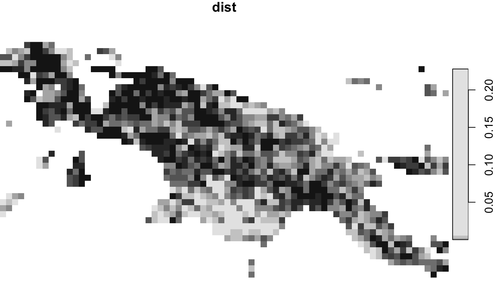
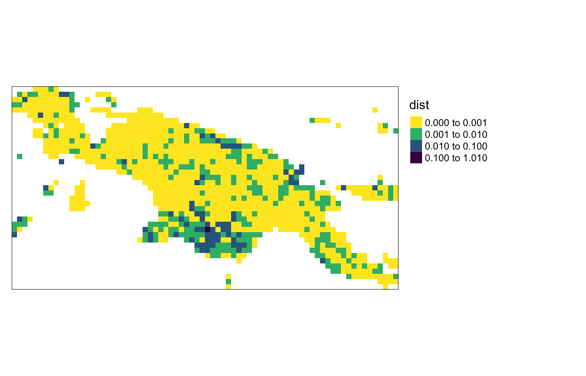

## Loading required package: abind## Loading required package: sf## Linking to GEOS 3.8.1, GDAL 2.4.4, PROJ 7.0.0library(sf) library(motif) landcover = read_stars(system.file("raster/landcover2015.tif", package = "motif")) landcoverold = read_stars(system.file("raster/landcover2001.tif", package = "motif"))
Regular window
compare_1 = lsp_compare( landcover, landcoverold, window = 100, type = "cove", dist_fun = "jensen-shannon", threshold = 0.9 )
## Metric: 'jensen-shannon' using unit: 'log2'.plot(compare_1["dist"])

Polygon
ecoregions = read_sf(system.file("vector/ecoregions.gpkg", package = "motif")) ecoregions = st_transform(ecoregions, st_crs(landcover))
plot(ecoregions)
## Warning: plotting the first 9 out of 16 attributes; use max.plot = 16 to plot
## all
compare_2 = lsp_compare( landcover, landcoverold, window = ecoregions, type = "cove", dist_fun = "jensen-shannon", threshold = 0.9 )
## Metric: 'jensen-shannon' using unit: 'log2'.plot(compare_2["dist"])
